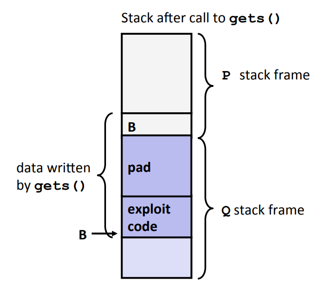

CSAPP-Lab-3 实验报告: attacklab
摘要
本文介绍了笔者在做 attacklab 一节的实验报告。该 lab 要求通过 gdb 等工具，以缓冲区溢出的方式攻击二进制执行文件。 这段时间一直在忙秋招和毕业，很多事情都搁置了，希望毕业顺利。
理论知识
熟悉 C 语言的同学都知道，库函数 char *gets (char
*str) 用于一行字符串的读取，传入缓冲区地址。该函数不会进行边界检查，如果长度超出缓冲区大小，就会污染其他内存，可能造成段错误。别有用心的黑客甚至可以利用这个漏洞，执行自定义的逻辑。一般来说有两种方式。
代码注入
如果没有栈随机化、栈执行检查等检查措施，代码注入是一种很简单的攻击手段。它的思想是，在读入的字符串中，注入汇编代码，并通过 ret 的跳转机制，使得代码得到执行。假设有如下的代码：
1 | void P(){ |
执行逻辑为：
- P 中通过
call指令调用 Q，等价于先push下一条指令地址到栈上，再跳转到Q - Q 中申请 64 字节的栈空间，完成字符串读入和处理
- Q 通过
ret指令返回P，等价于pop %rip，即将栈上的地址弹出写入 PC 寄存器
栈空间如下图所示：

栈是向下增长的，从上到下依次是：
- P 的栈空间（最底部为返回地址 A）
- Q 的栈空间（B 为缓冲区起始地址）
这种情况下，黑客可以在缓冲区中注入恶意代码（exploit
code），并填充中间部分（pad），最后把返回地址 A 重写为缓冲区起始位置（B）。这样以来，程序在执行到 Q 中的 return 后，就不是回到 P 中继续执行原本的逻辑，而是开始执行黑客注入的恶意代码。
为了抵抗这种攻击，新的代码可以使用 fgets 这种带有边界检查的函数，而旧代码可以通过以下机制：
- 栈随机偏移：每次执行都随机初始化栈的起始地址的偏移量，使得固定地址的溢出攻击失效
- 系统级保护：将栈标记为不可执行的，只有代码区可执行
- Stack Canary：在缓冲区后放置随机的特殊值（canary），检查读入前后是否被污染
面向返回编程
栈随机偏移和系统级保护都有一定的作用，但不是无懈可击的。面向返回编程攻击（Return-Oriented
Programming
Attacks）的思想是，在代码区找到以 c3(ret 指令）结尾的可执行的字节序列（gadgets），将它们填充到栈上。然后，程序在执行 ret 指令时，会弹出栈上地址并跳转执行，执行到下一个 ret，重复这个过程，就把所有的 gadget 串成了一条链，实现了执行自定义逻辑的行为。如下所示：
[rop.png]
这依赖于黑客在代码区找到有用的 gadget，组装出自定义逻辑。
Code Injection
phase 1
基础的练习题目，不需要注入新的代码，只需要注入跳转地址，跳转到 touch1 即可。通过 objdump
-d 对 ctarget 进行反汇编，可以看到 touch1 的起始地址为 0x4017c0。pdf 中介绍主函数为如下的 test 函数，通过 getbuf->Gets 完成字符串读入，Gets 的行为与标准库 gets 类似，因此我们的重点在 getbuf 函数。
1 | void test() |
getbuf 反汇编如下：
1 | 00000000004017a8 <getbuf>: |
可以看到，getbuf 申请了 0x28=40
bytes 的栈空间，并把地址作为 Gets 函数的参数。进一步参考上面的这张图片
对应可得，应该填充 40 个任意字节（不能包含换行符 0x0a），再填入缓冲区的起始地址，就可以在 getbuf 的 retq 执行完毕后，执行缓冲区逻辑。为了获取缓冲区起始地址，可以按如下步骤：
1 | gdb ./ctarget # 调试启动 |
可得，结果是 0x5561dc78。那么，就可以设计如下的攻击字节序列：
1 | 00 00 00 00 00 00 00 00 |
在 5*8=40 个填充字节后，以小端逆序存放缓冲区地址。通过下面的命令验证结果，发现攻击成功。
1 | ./hex2raw < ctarget.l1.txt | ./ctarget -q |
phase 2
本节要求跳转到 touch2 函数（地址 0x4017ec），该函数需要传入 cookie 作为参数才能验证成功。因此，需要注入汇编代码，完成传参过程。可以写出如下的汇编代码。注意这里不能直接使用 call 指令，无法单独完成汇编过程。
1 | movq $0x59b997fa,%rdi |
% rdi 是 x86 规范的存储第一个入参的寄存器，pushq+retq 联合完成跳转到 touch2 的过程。按如下命令得到对应的机器码：
1 | gcc -c cl2.s |
可以发现结果是
1 |
|
注意，大小端是对数值存储来说的，指令不需要做逆序处理。填充可以得到如下的结果：
1 | 48 c7 c7 fa 97 b9 59 |
验证可以发现通过测试。
1 | ./hex2raw < ctarget.l2.txt | ./ctarget -q |
phase 3
与 phase
2 类似，区别在于要传入 16 进制的 cookie 字符串作为参数，才能匹配。字符串存储在哪里呢？如果存储在 getbuf 函数的栈上（即缓冲区里），随着 getbuf 执行 add $0x28,%rsp，栈空间会被释放，而 touch3,hexmatch 的新数据会覆盖这部分栈空间，导致数据被污染，因此，不能存储在这里。
所以，我们需要把字符串存储在不会被后续执行覆盖的位置，简单起见，可以存储在 test 函数的栈上，因为 test 函数一直没有返回，栈空间持续有效。接下来，构建 cookie 字符串，可以查 ascii 表逐字符地填写 16 进制 ascii 值，本文的 cookie 是 0x59b997fa，查表结果为 35
39 62 39 39 37 66 61。同样的，这里也不需要小端逆序。
接下来，编写汇编完成传参过程，字符串基址取决于存储的位置。
1 | movq $0x5561dca8,%rdi # cookie字符串基址 |
可以构建出如下的攻击字节序列，78 dc 61 55 00 00 00
00 这一行是缓冲区基址，与前面类似。下一行存储了 cookie 字符串，地址可以由 0x5561dc78+0x28（缓冲区大小）+0x8（返回值大小）=0x5561dca8 计算得到。
1 | 48 c7 c7 a8 dc 61 55 |
验证可得，通过测试。
1 | ❯ ./hex2raw < ctarget.l3.txt | ./ctarget -q |
ROP
这部分就启用了栈随机偏移和栈不可执行的系统防护，只能通过面向返回编程的角度进行攻击。
phase 4
要实现 phase 2 的效果，提示可以用两个 gadget 实现。要完成目标，我们需要做以下步骤：
- 将 cookie 赋值给 % rdi
- 跳转到 touch2
其中，第 2 步只需要在栈里放置 touch2 的地址，等到上一个 gadget ret 时会自动完成跳转，不需要 gadget。步骤 1 中，由于 cookie 是自定义的，farm 中很难正好有一步到位的 gadget 可以将 cookie 赋给 % rdi（至少我这个 cookie 没有），因此需要拆分多个 gadget 实现。不难想到，可以先把 cookie 放在栈上，pop 到某个寄存器上，再 mov 给 % rdi，就可实现。
查看后文的表格，可以发现 0x58-0x5f 都是 popq 指令，从 start_farm 开始看汇编，发现 addval_219 满足要求：
1 | 00000000004019a7 <addval_219>: |
其中，90 是 nop 指令，无影响。我们就找到了 0x4019ab 的 gadget1，作用是 popq
%rax。接下来，需要找 movq %rax,
%rdi 的 gadget，查表可得指令为 48 89
c7，发现 addval_273 函数中满足要求：
1 | 00000000004019a0 <addval_273>: |
0x4019a2 的 gadget2，就可以完成上述 mov 操作。接下来，需要构造攻击字符串。这里需要关注指令在堆里的顺序，分析可得程序的行为应该是：
getbuf执行完毕，释放栈空间retq跳转到 gadget1- 从栈上 pop 出 cookie
retq到 gadget2movqretq到 touch2
getbuf 之后的 ret，pop 均是以 test 的栈为基准的（因为 getbuf 的栈已经释放），所以后续指令都得覆盖在 test 栈上。进而可以构造出以下攻击序列：
1 | 00 00 00 00 00 00 00 00 |
填充 40 个空字节后，先跳转到 gadget1（第六行），栈指针移动到第七行，然后 popq 弹出 cookie，栈指针移动到第八行，跳转到 gadget2，移动到第九行，最后跳转到 touch2。最后进行运行验证：
1 | Cookie: 0x59b997fa |
phase 5
这个 phase 要使用 rop 达到 phase 3 的效果，课程组刻意把这个 phase 做的很难，而且只占 5 分，留作奖励，官方解答用了 8 个 gadget。
不妨先从 farm 分析下有哪些指令可以使用（有效的 gadget），发现有：
1 | movq %rax,%rdi # 48 89 c7 0x4019a2 |
有代码意义的函数，只有一个加法函数 add_xy：
1 | 00000000004019d6 <add_xy>: |
movl 指令会把目标寄存器的高 4 字节置为 0。
乍一看好像有点尴尬。因为我们没有直接写入内存的指令，所以 cookie 字符串只能以缓冲区读入的方式写在栈上。而由于栈的随机偏移，也无法知晓固定的起始地址。但是换个角度，相对地址是可以控制的，可以通过 gadget 读取 % rsp 的值，并通过 add_xy 函数添加相对偏移，获取到字符串基址。按这个角度，核心要解决的问题有两个：
- add_xy 怎么传参
- 相对偏移怎么确定
add_xy 需要 % rdi，% rsi 两个参数，% rdi 存储栈帧，% rsi 存放相对偏移（因为只能向 % esi 赋值），数据来源均是 % rax。从上述 gadget 可以找出两条赋值路线：
- %rsp->%rax->%rdi
- %rax->%edx->%ecx->%esi
对应的汇编依次为：
1 | movq %rsp,%rax # 48 89 e0 0x401a06 |
把 cookie 字符串放置在这些 gadget 之后，再计算相对偏移量就可以了。构造好的攻击序列如下：
1 | 00 00 00 00 00 00 00 00 |
其中的偏移值为 0x48=72 字节，这是由于在第一个 gadget 内，% rsp 处在第 7 行，cookie 字符串存储在第 16 行，二者间差了 8*9=72 个字节。成功通过验证：
1 | Cookie: 0x59b997fa |
总结
这个 lab 做起来还是很有意思的。我第一次学完相关理论知识后，有点望而生畏，觉得难度很大。等有时间了，沉下心来，发现难度其实不大，循序渐进地做下来，还是很有成就感的。正如老师在课程里说的，"成功通过这个 lab，就打开了一扇黑暗的大门"。指导书里也提到，“我们已经成功绕过了两个现代化的阻止缓冲区溢出的手段”。通过这种理论知识和实践练习，可以深度理解缓冲区溢出的风险和规避措施，进而在日常编程中提高戒心。